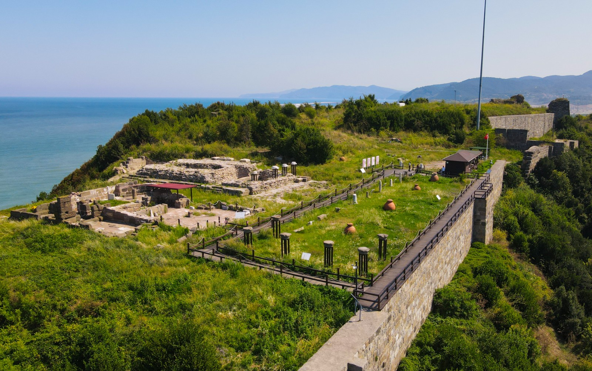
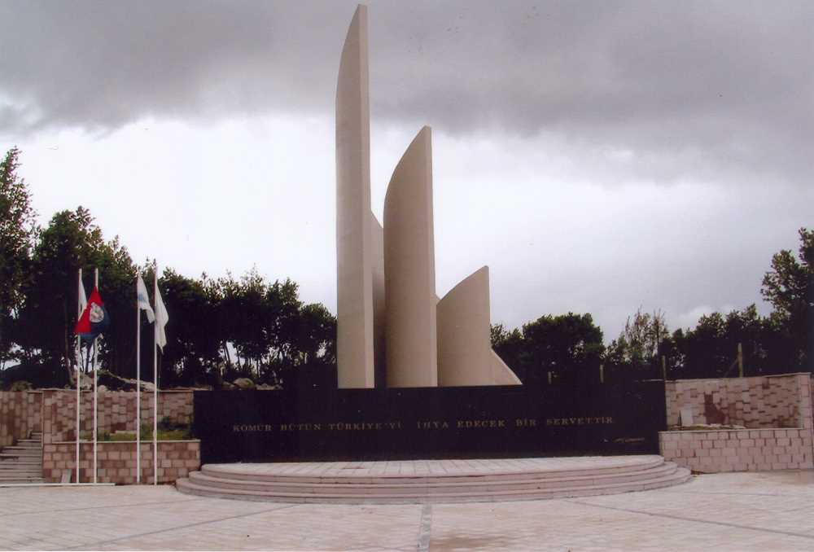

Zonguldak'ın Kültürel Mirasları
Şehrin tarihine tanıklık eden önemli yapılar ve doğal güzellikler.

Filyos Antik Kenti
Roma dönemine ait kalıntıları barındıran Filyos Antik Kenti, bölgenin en eski yerleşim alanlarından biridir.
Gökgöl Mağarası
Zonguldak'ın en büyük mağarası olan Gökgöl Mağarası, sarkıt ve dikitleriyle ünlüdür.

Uzun Mehmet Anıtı
Türkiye’de taş kömürünü bulan Uzun Mehmet’in anısını yaşatan anıt, Zonguldak’ın simgelerindendir.

Kilimli Sahili
Doğal kayalık yapısıyla dikkat çeken Kilimli Sahili, hem tarihi hem turistik bir bölgedir.
Halil Paşa Konağı
Osmanlı döneminden kalma bu konak, Zonguldak’ın tarihî mimarisine ışık tutan nadide eserlerdendir.
Ereğli Kalesi
Karadeniz Ereğli ilçesinde yer alan bu kale, Bizans dönemine uzanan köklü geçmişiyle önemli bir yapıdır.